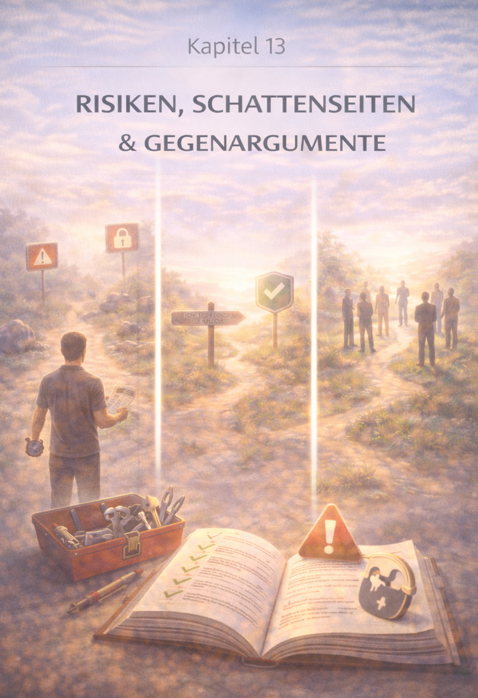

Kapitel 13: Risiken, Schattenseiten und Gegenargumente
Die Rückeroberung der eigenen Souveränität – Kapitelansicht.
DE
EN
Kapitel 13 – Risiken & Gegenargumente

Kapitelbild – Risiken, Schattenseiten und Gegenargumente